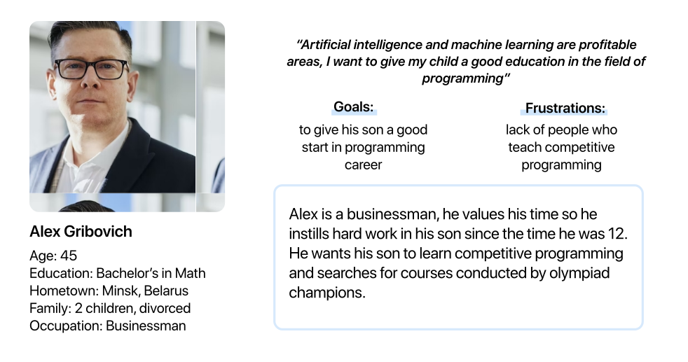
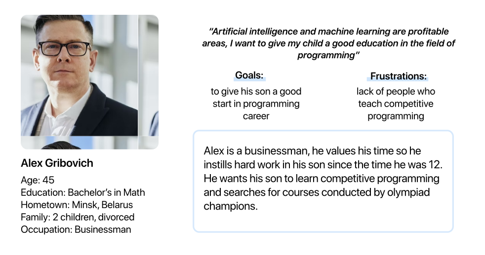

zaba
leraa
An educational project aimed at making tutoring more affordable for everyone.
July 2022-October 2022
Solo UX/UI Designer for a startup
A lot of school students need tutors to improve their knowledge, but hiring a tutor costs a lot of money, and not everyone can afford it.
Mostly, students entering the university want to be financially independent of their parents, but face the problem of finding a part-time job due to full-time study.


.svg)
I analyzed the 3 most popular websites in the field of tutoring on the Belarusian market. All these services provide tutors, but these are either group classes with tutors or classes with experienced, expensive tutors. There is an analog on the American market - go student, but it is not localized for Belarus. This then became my opportunity for the solution.
Mostly, students entering the university want to be financially independent from their parents, but face the problem of finding a part-time job due to full-time study.


.svg)
 

According to the results of the interview that I conducted, users said that they prefer minimalistic designs with fewer elements. I chose blue as the main color because blue is the color of trust. It suggests loyalty and integrity, which is why it is a great choice for businesses that want to project dependability, security, and peacefulness. Some research suggests that people with highly intellectual work, which requires a high cognitive load, for instance, programmers or academics, are more productive in a blue environment.


How did your users respond?
I received positive feedback from both tutors and parents. People find the ecosystem for tutoring very convenient.
What's next?
In a later update, I would like to add the possibility of video conferencing directly in the application, but it requires large budgets and technical specialists. I would also implement completing tasks directly in the app, getting a rating for homework, and a motivation system for the student.
What did you learn?
It was the first time I conducted an interview directly with users, because before I only had experience in surveys. I found it very interesting to listen to our users, as well as arrange for them to test products later, and collect their feedback. I also realized that interfaces are not only about a beautiful picture, but more about usability.
What would you have done differently?
I would have focused even more on accessibility. If I had more time, I would have implemented a dark/light theme. When I was doing white paper research I found a lot of research about accessibility in tutoring, it seems to me that this is a very interesting topic to study, so I would dive deeper into accessibility and improve the application in this direction.